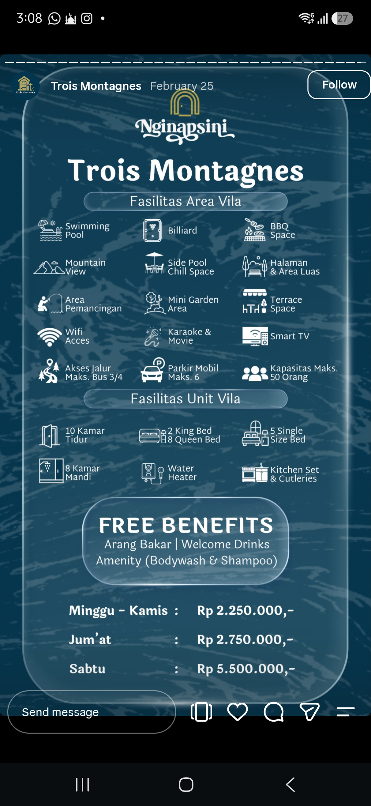
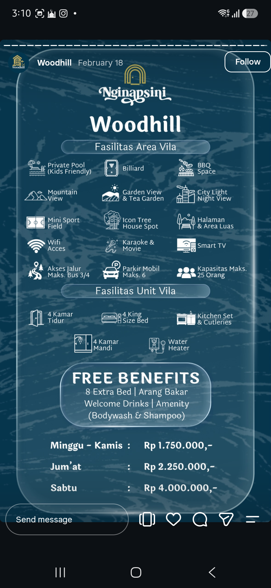

Kelas C Sibilance Goes To Puncak (whenn yahhh???!!!!)
Ini tuh tempat belajar yang isinya tulisan buat kelas 5 - C Ilmu Perpustakaan UIN Jekardah angkatan 2024 (sibilance) yang kebanyakan cuman bikin wacana aja untuk mengadakan acara kelasan seperti: bakar-bakar, pergi ke curug, pantai, mancing atau bahkan liburan sekelas ke villa di puncak rogob. Jadi ini bisa dibilang sebuah usaha untuk bisa mewujudukan salah satu dari sekian banyak wacana tersebut agar si sibilance yang payah, cemen, gaasik, dan cupu ini bisa lebih bonding lagi satu sama lain mungkinn yeahh, gak sirkel-sirkelan, dan bisa sama-sama terus sampe lulus nanti mungkin maybe bisa jadi (agoy, 2026). FAKYU ALL!!!
Berikut ini daftar villa buat nanti kalo kelas C jadi:
Bismillah semoga jadi dan pada bisa ya manteman, berharap bangett semuanya bisa ikut. 37 orang di kelas ikut semuaaa,,,Aamiin....
Untuk sementara sihh baru ada 2 opsi ini ya kawan buat si villanya tehh. Tapi kalo dari kalian ada yang punya rekomendasi lain boleh bangettt lohhh
1. Villa Trois Montagnes

Ini pertimbangannya:
- Kalo yang ikut semua atau lebih dari 30 orangg
- Lebih mahal ofkors karena dia guede, luas dan kane kata najipa
- Lebih luas bangett jadi enakk dan privat jugaak karena ada tembok
- Nih liat sendiri dehh:
cek sendiri yeahhh
2. Villa Woodhill

Ini pertimbangannya:
- Kalo yang ikut 20-25 orangg sajaa
- Lebih murahh yeahh karena kann lebih kecil jugakk yeekannn
- Agak lebih kecil dari yang atas dan sepertinya itu gak privat dehh dari keliatannya mahh karena gaada tembok yang batesin gitu
- Nih liat sendiri dehh:
cek sendiri yeaahhh
Apa aja sihh yang perlu disiapkan???
- Uwang ya pastinya, karena kita butuh uwangg. Jadi minta tolongg bangett buat nabung dari sekaranggg. "Rajin menabung is the key"
- Gaada kendaraan? temenlu banyak freennn jadi aman aja. InsyaaAllah semuanya akan dapet barengan, kita jalan bareng-bareng laa soalnyaa
- Keluangan waktu pastinyaa karena rencananya itu akan ngambil di weekdays. Jadi berangkat hari Minggu dan Pulang di hari Senin siang/sore